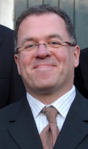

Quadrivium |
|||||||||||
|
|||||||||||
Organisatie |
|||||||||||
|
|||||||||||
Activiteiten |
|||||||||||
|
|||||||||||
voor Leden |
|||||||||||
|
|||||||||||
Contact |
|||||||||||
|
|||||||||||
Vokollage
Quadrivium
Vokollage
Vokollage is het gemengd koor van ESMG Quadrivium. Wij zijn een gezellig koor van momenteel zo'n 25 leden, maar we kunnen altijd uitbreiding gebruiken! Ons motto is dat iedereen kan zingen, vaak moeten mensen dat alleen nog ontdekken. Grijp nu je kans en kom zingen bij Vokollage!
Hieronder meer informatie over Vokollage en haar bezetting, repertoire, dirigent en repetities. Nog resterende vragen? Meespelen? Mail dan naar .
.jpg "Vokollage")
Vokollage na het optreden tijdens Muziek op de Dommel 2014

Vokollage tijdens het Quadrivium Winterconcert van November 2012 (foto: Steinar Wouters)
Bezetting
We zingen in de gebruikelijke SATB-bezetting (sopranen, alten, tenoren en bassen) en we hebben mede dankzij het grote aantal mannelijke studenten aan de Technische Universiteit een, voor koorbegrippen, uitzonderlijk grote herensectie. Dat betekent niet dat onze dames in de verdrukking komen, maar wel dat we mooi in balans zijn.
Agenda
Repertoire
Vokollage heeft in de afgelopen jaren een aantal spetterende concerten verzorgd waarbij gevarieerde muziekstijlen aan bod kwamen. Daarbij is vaak samengewerkt met de andere ensembles en orkesten van Quadrivium (harmonieorkest Auletes, kamerorkest Ensuite en blokfluit ensemble Sambuca), andere (studenten-)koren en bekende zangsolisten uit de regio. Een greep uit het repertoire van de afgelopen jaren:
- Allerlei Slavische choir music (Russia and Balkan)
- De Barokke mis Messe de Minuit (France)
- Hebreeuwse and Britse liefdesliedjes (Israel and England)
- Het modern klassieke stuk Nova Zembla (Netherlands)
- Koorarrangementen van Jazzmuziek (USA)
- De vroeg-20ste eeuwse opera Treemonisha (USA)
- De komische Knock Knock cantata van de 21ste eeuwse componist P.D.Q. Bach alias Peter Schickele.
- Stabat Mater (Joseph Rheinberger)
- A Little Jazz Mass (Bob Chilcott)
- The Sprig of Thyme (John rutter)
Op dit moment repeteren we voor ons optreden bij Glow 2014.
Concerten
Sommige van de hoogtepunten uit de afgelopen jaren zijn:
November 2014: Lichtfestival Glow had een bijzonder kunstwerk deze editie: een lichtshow met live muziek! Vokollage heeft het eerste weekend van het festival vier maal een romantisch repertoire opgevoerd, waaronder de Cantique de Jacques Racine van Fauré, Calme des Nuits van Rachmaninov en Northern Lights van Ola Gjeilo. Enkele stukken zijn gedurende de week die hierop volgde met de bijzondere wave field synthesis techniek afgespeeld in het mystieke kunstwerk.
Juni 2014: Ook tijdens het eerste lustrum van Muziek op de Dommel straalde Vokollage weer op het hoofdpodium, dit maal met als hoogtepunt 'A sprig of thyme' van John Rutter. Het festival was wederom goed bezocht en vond deze editie op de campus van de Technische Universiteit Eindhoven plaats. Dit weekend heeft Vokollage tevens haar repertoire ten gehore gebracht in de prachtige Catharina kerk in het centrum van Eindhoven.
Januari 2014: Januari 2014 stond voor Vokollage in het teken van een nieuwe uitdaging: een uitwisselingsproject! Samen met het Haarlems Studenten Koor is een afwisselend repertoire in zowel Eindhoven als Haarlem ten gehore gebracht, waaronder enkele werken voor dubbelkoor onder andere van Scarlatti en Mendelssohn.
Juni 2013: Tijdens het festival Muziek op de Dommel voerde Vokollage enkele stukken van Gioachino Puccini op: de Petite Messe Solennelle met de mezzosopraan Marjolein Niels als soliste en enkele stukken in mediterraans thema: de Quartetto Pastorale, Il Gondolieri en Il Carnavale di Venezia.
Juni 2012: Op het festival Muziek op de Dommel werden drie jazz stukken uitgevoerd, All the things you are, Fly me to the moon en Misty. Als afsluiter werd de Treemonisha van Scott Joplin gezongen, dit alles onder piano begeleiding van Lex van der Meer.
Maart 2012: Op een lunch concert in de Blauwe Zaal bracht Vokollage enkele Zuid-Amerikaanse stukken ten gehore waaronder Los Conflades de la Estleya van Juan de Araujo en Chacona van Juan Arañés. Daarnaast werden meerdere werken van Eric Whitacre opgevoerd, namelijk the Seal Lullaby, This Marriage en beide volumes van the Animal Crackers. Lex van der Meer begeleidde op de piano.
December 2011: In samenwerking met Ensuite voerde Vokollage als tweede koor ooit het moderne Nederlandstalige stuk Nova Zembla uit in aanwezigheid van de componiste Sylvia Maessen. Erik Janse, Caroline Spanjaard en Wim Ritzerfeld soleerden in het Vertigo gebouw op de TU/e campus.
Juni en juli 2010: Tijdens het lustrumconcert van Quadrivium zong Vokollage de Misa Criolla van Ariel Ramìrez. Op een groot podium op de Dommel bij het Van Abbemuseum, trad Vokollage op met solist Jorge Martina. Een maand later meerde Quadrivium met Klippers aan bij verschillende steden rond het IJsselmeer. Daar werd de Misa Criolla nogmaals met veel succes uitgevoerd. Ditmaal met solist Erik Janse.
Maart 2009: In samenwerking met gemengd koor CantaTU van de Technische Universiteit Eindhoven heeft Vokollage het prachtige Requiem van Fauré ten gehore gebracht. Het concert, met solisten Eric Ruis en Jojanneke Nijdam, vond plaats in de Catharinakerk te Eindhoven.
Maart 2008: Vokollage zong tijdens het concert, dat werd gehouden in samenwerking met ondervereniging Ensuite, onder andere het Credo van Antonio Vivaldi en de Kleine Orgelmesse van Joseph Haydn.
November 2007: Samen met Auletes en de koren "De Volharding" en "La Bonne Esperance" heeft Vokollage meegedaan aan de opvoering van de "Queen Symphony" van Tolga Kashif.
Januari 2007: Vokollage organiseerde haar eerste eigen project: "Petite Messe Solennelle" van Gioacchino Rossini voor koor, vier zangsolisten, piano en harmonium. In het voorprogramma speelde Sambuca Italiaanse blokfluitmuziek.
Mei 2006: Lustrumconcert 50 jaar TU Eindhoven in het Muziekcentrum Frits Philips. Een uitvoering met muziek uit de 19e en vroege 20e eeuw:
- Johannes Brahms: "Zigeunerlieder" en Bela Bartok: "Vier Slovaakse Volksliederen" voor koor en piano.
- Carl Orff: "Carmina Burana" samen met Auletes, het Kempenkoor en het Helmonds Vocaal Ensemble.
Dirigent
Vokollage staat onder de bezielende leiding van dirigent Ruud Huijbregts. Hij studeerde orgel, harmonium en koordirectie aan het Brabants Conservatorium te Tilburg en volgde diverse cursussen o.a. bij Luigi Tagliavini en Albert de Klerk.
Naast zijn werk als koordirigent is hij nog op verschillende andere muzikale terreinen actief: als organist, klavecinist en contiuospeler. Ruud Huijbregts gaf al vele concerten in het binnen- en buitenland en verzorgde diverse radio-, televisie- en cd-opnamen.
Repetities
Onze repetitieavond is de dinsdagavond, dan repeteren we van 19.30 tot ongeveer 22.15 uur in de Bunker, waarna we gezellig nog even naborrelen, soms tot in de kleine uurtjes.
Spreekt bovenstaande je aan, kom dan eens kijken, luisteren of meezingen op een repetitie!